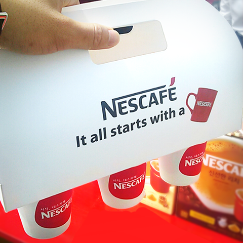
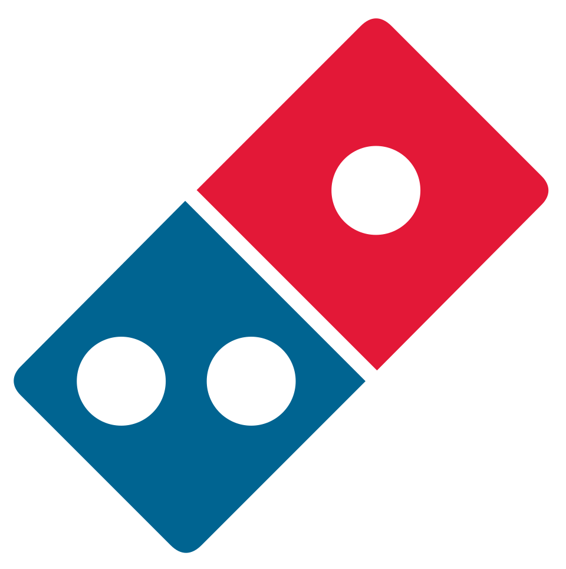

홈 > 브랜드 매거진 > 네스카페
네스카페
네스카페는 식음료 브랜드로, 맛, 메뉴 구성, 패키지, 매장 또는 유통 채널이 함께 브랜드 경험을 만드는 영역입니다.
산업 분야 식음료 · 공개 등급 자료 기반 · 브랜드 평가 4.3 ★

한눈에 보는 브랜드
네스카페는 식음료 브랜드입니다. 맛, 메뉴 구성, 패키지, 매장 또는 유통 채널이 함께 브랜드 경험을 만드는 영역으로 분류되며, 브랜드명과 업종, 운영 국가, 공개 로고 여부를 함께 보며 사전 항목의 기본 맥락을 확인할 수 있습니다.
브랜드 관점
네스카페 항목은 단순한 이름 목록이 아니라 식음료 시장 안에서 어떤 역할을 하는지 읽기 위한 기준점입니다. 제품·서비스 범위, 유통 방식, 시각 아이덴티티, 시장 포지션을 함께 비교하면 같은 산업의 다른 브랜드와 차이가 선명해집니다.
시작과 성장
네스카페(Nescafe)는 스위스 식품회사 ‘네슬레’의 커피 브랜드이다. 네스카페는 네슬레와 카페를 합성한 말로, ‘Nes’는 기적(miracle)을 뜻하고, ‘Café’는 커피(coffee)를 뜻한다.
‘기적의 커피’ 네스카페는 세계의 커피 문화를 정립하고 79년 동안 세계인들에게 사랑 받는 커피 브랜드로서 자리매김 하고 있다.
브랜드 아이덴티티
'It all start with a NESCAFE.' 커피를 마시는 매 순간이 특별하다고 믿는 네스카페는, 커피를 즐기는 순간뿐만 아니라, 지속가능한 커피농사의 실현으로 커피의 미래까지 생각하는 글로벌 브랜드이다.
제품과 서비스
커피업계의 선구자, 네스카페는 커피 뿐만 아니라 커피를 만드는 사람들에게도 열정을 가지고 있다. 최고의 커피를 전하기 위해 책임 농업에서부터 책임 생산, 책임 소비를 실현한다.
인스턴트 커피
사람들
소유자: 네슬레
현재 상태
타임라인
BI/CI 변천사
함께 읽을 브랜드
네슬레는 스위스의 식음료 브랜드로, 맛, 메뉴 구성, 패키지, 매장 또는 유통 채널이 함께 브랜드 경험을 만드는 영역입니다.
버거킹는 미국의 식음료 브랜드로, 맛, 메뉴 구성, 패키지, 매장 또는 유통 채널이 함께 브랜드 경험을 만드는 영역입니다.
 식음료 · 편집 검수버드와이저
식음료 · 편집 검수버드와이저버드와이저는 식음료 브랜드로, 맛, 메뉴 구성, 패키지, 매장 또는 유통 채널이 함께 브랜드 경험을 만드는 영역입니다.
켈로그는 미국의 식음료 브랜드로, 맛, 메뉴 구성, 패키지, 매장 또는 유통 채널이 함께 브랜드 경험을 만드는 영역입니다.
KFC는 미국의 식음료 브랜드로, 맛, 메뉴 구성, 패키지, 매장 또는 유통 채널이 함께 브랜드 경험을 만드는 영역입니다.
 식음료 · 자료 기반고디바
식음료 · 자료 기반고디바고디바는 벨기에의 식음료 브랜드로, 맛, 메뉴 구성, 패키지, 매장 또는 유통 채널이 함께 브랜드 경험을 만드는 영역입니다.
 식음료 · 자료 기반글렌피딕
식음료 · 자료 기반글렌피딕글렌피딕는 영국의 식음료 브랜드로, 맛, 메뉴 구성, 패키지, 매장 또는 유통 채널이 함께 브랜드 경험을 만드는 영역입니다.

식음료 · 자료 기반도미노피자도미노피자는 미국의 식음료 브랜드로, 맛, 메뉴 구성, 패키지, 매장 또는 유통 채널이 함께 브랜드 경험을 만드는 영역입니다.